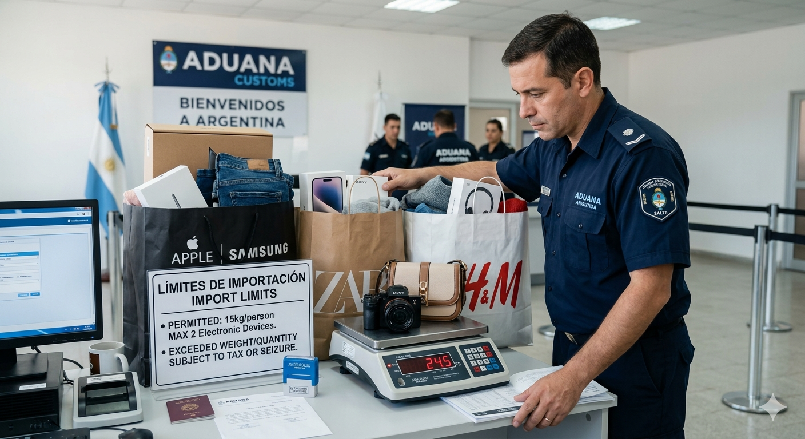

Aduana Argentina: Qué se permite traer y límites de compra

Cuando regresas de Bermejo a Orán, cruza la aduana argentina. Es un trámite sencillo pero importante. Si no conoces las reglas, puedes tener sorpresas desagradables: confiscación, multas, o retrasos. En esta guía explico exactamente qué puedes traer, cuáles son los límites, y qué evitar.
Sistema de franquicia de viajero: El límite clave
El concepto más importante es la "franquicia de viajero". Esto es el monto en dinero hasta el cual puedes traer compras de Bolivia SIN pagar impuestos de aduana.
Límite actual (2026): USD 300 por persona
Esto significa:
- Puedes traer hasta USD 300 en compras sin pagar nada.
- Por arriba de USD 300, el excedente tributa (se pagan impuestos).
- Cada persona tiene su propio límite (si viajas en familia, sumas los límites).
¿Cómo se calcula el USD 300?
Aduana valúa los productos que traes. Si compras:
- Camisa en 200 BOB → approx. USD 30
- Zapatos en 400 BOB → approx. USD 60
- Perfume en 500 BOB → approx. USD 75
Total: USD 165. Estás dentro del límite. Si compraste más, pagarías impuestos.
Artículos permitidos sin problema
- Ropa y calzado: Cualquier cantidad.
- Accesorios: Bolsas, cinturones, sombreros.
- Cosméticos y perfumes: Dentro del límite USD 300.
- Electrónica personal: Un celular, una laptop (uso personal, no comercial).
- Medicamentos personales: Con receta si son controlados.
- Libros y documentos.
- Alimentos procesados: Cacao, especias secas, bebidas alcohólicas (dentro del límite).
Artículos prohibidos
Completamente prohibidos (confiscación automática):
- Drogas de cualquier tipo: Marihuana, cocaína, etc.
- Armas y municiones: Sin permiso especial.
- Frutas y verduras frescas: Manzanas, naranjas, tomates, etc.
- Carnes frescas o curadas: Jamón, chorizo casero, etc.
- Lácteos frescos.
- Productos falsificados de marca: Bolsas Louis Vuitton falsas, relojes fake, lentes falsificados.
- Animales vivos sin certificados.
Artículos restringidos (se permite con cuidado)
- Bebidas alcohólicas: Permitidas, pero contando dentro del límite USD 300. No hay cantidad específica prohibida si es para consumo personal.
- Tabaco: Permitido en cantidad razonable para consumo personal.
- Efectivo en dólares o bolivianos: Permitido, pero montos mayores a USD 10.000 pueden llamar la atención.
Límites especiales para ciertos artículos
Artículos nuevos vs. usados:
- Usados (ropa, zapatos viejos): Entran en la franquicia normalmente.
- Nuevos (con etiqueta): Se valúan a su precio de mercado.
Electrónica:
- Un celular para uso personal: OK.
- Dos celulares: Sospecharían que los vendes (comercio).
- Una laptop para uso personal: OK.
- Tres laptops: Claramente comercial, se requiere importación formal.
¿Qué pasa si superas el límite?
Si traes mercadería por USD 400 pero tu límite es USD 300:
- Aduana retiene los artículos excedentes (USD 100).
- Calculas impuestos (generalmente 35-50% del valor).
- Pagas: USD 35-50 aproximadamente.
- Si pagas, te devuelven los artículos.
- Si no pagas en el plazo, se los quedan.
No es multa, es simplemente pagar el arancel. Es como impuesto de importación.
¿Debo declarar todo?
Sí, debes declarar. Cuando cruza a Gendarmería/Aduana, ellos preguntan:
- "¿Qué traes?"
- "¿Dinero?"
- "¿Algo prohibido?"
Debes responder honestamente. Si dices "nada" pero te revisan y encuentran cosas, es fraude aduanal y hay multas mayores.
Estrategia: Cómo maximizar tus compras sin pagar aranceles
- Distribuye con familia: Si viajas con pareja e hijo, son 3 personas = USD 900 en franquicia.
- Guarda tickets: Para justificar valores.
- Compra cosas de menor valor unitario: En lugar de 1 bolsa USD 300, trae 10 artículos USD 30 c/u.
- Ropa usada: Vale menos que nueva.
- Regatea en Bermejo: A menor precio, menor valor declarado.
Preguntas frecuentes
¿Puedo traer dinero ilimitado?
Sí, pero montos mayores a USD 10.000 pueden ser reportados a autoridades por lavado de dinero. Legal, pero pueden investigar.
¿Qué pasa si intento pasar mercadería ilegalmente?
Multas, confiscación, y antecedentes aduanales. No vale la pena.
¿Mi moto entra en el límite?
No. Vehículos tienen regulaciones especiales, muy complicadas. No intentes traer una moto de Bolivia.
Conclusión
La aduana argentina es sencilla si sigues las reglas: USD 300 por persona, sin artículos prohibidos, con comprobantes. Así cruza sin problemas. Si superas el límite, simplemente pagas un arancel razonable. Nada trágico.
Siempre verifica los requisitos actuales en el sitio de AFIP (Administración Federal de Ingresos Públicos).
Información a mayo 2026. Límites pueden cambiar. Verifica siempre con AFIP.